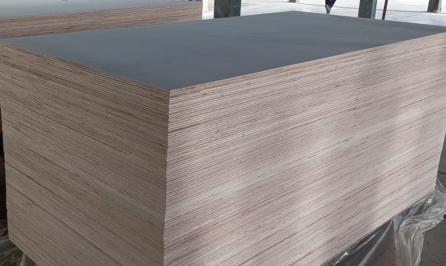

Mengeksplorasi dan Upaya Keselamatan dalam Pembuatan Kayu Lapis
Pembuatan plywood, sebuah proses yang memerlukan ketelitian, memainkan peran penting dalam industri di Indonesia. Artikel ini akan membahas secara mendalam prosedur-prosedur yang terlibat dalam produksi plywood, dengan fokus pada metode yang digunakan oleh perusahaan terkemuka seperti Hasil Tani Eksporindo. Dalam eksplorasi ini, kami akan membahas aspek-aspek kunci seperti proses manufaktur yang sistematis, keselamatan kerja, dan berbagai jenis plywood yang diproduksi.
Proses Manufaktur Sistematis
Secara berkala, proses pembuatan plywood terstuktur secara sistematis di pabrik-pabrik khusus. Proses pabrik pembuatan plywood adalah prosedur bertahap, memastikan produksi plywood berkualitas tinggi. Proses ini melibatkan beberapa langkah penting, termasuk persiapan bahan baku, pembuatan veneer, dan proses penekanan.
Upaya Keselamatan di Lingkungan Produksi Plywood
Keselamatan kerja memegang peran sentral di fasilitas produksi plywood. Dalam rangka melindungi pekerja yang terlibat dalam seluruh proses, serangkaian upaya keselamatan diterapkan dengan ketat. Langkah-langkah ini mencakup penerapan perlengkapan pelindung dan kepatuhan yang tegas terhadap protokol keselamatan standar.
Beragam Jenis Plywood
Terapat beberapa jenis plywood yang diproduksi, masing-masing menawarkan fungsionalitas unik sesuai dengan kebutuhan spesifik. Softwood plywood, hardwood plywood, block board, dan fancy plywood adalah beberapa varian umum yang tersedia. Setiap jenis plywood dibuat dengan menggunakan teknik yang berbeda dan dipilih berdasarkan aplikasi yang diinginkan, membuka peluang kreatifitas dan kehandalan dalam berbagai proyek konstruksi dan desain.
Peran Mesin dalam Proses Produksi
Dalam langkah awal, bahan baku memasuki mesin untuk diolah secara lebih lanjut. Hasil Tani Eksporindo memanfaatkan peralatan canggih, termasuk press hidrolik besar, guna menjamin tingkat presisi dan efisiensi yang tinggi dalam seluruh proses produksi. Mesin-mesin tersebut, seperti hot press dan cold press, memiliki peran krusial dalam menentukan kualitas akhir dari produk plywood. Keahlian dan kecanggihan teknologi mesin turut membantu memastikan keluaran yang memenuhi standar kualitas tinggi yang diharapkan.
Teknik Pengeringan dan Kontrol Kualitas
Di beberapa pengering, plywood dikeringkan dengan hati-hati menggunakan metode yang berbeda. Langkah ini sangat penting untuk menjaga integritas struktural kayu. Kontrol kualitas menjadi sangat penting sepanjang proses, mulai dari tahap awal produksi sampai proses finishing.
Metode Produksi Inovatif
Bisa dilakukan dengan, produksi plywood menggabungkan metode-metode inovatif. Integrasi teknik hot press dan cold press memungkinkan pembuatan plywood dengan karakteristik yang beragam, sesuai dengan berbagai aplikasi.
Strategi Pemasaran Produk Plywood
Pemasaran produk memainkan peran kunci dalam kesuksesan produsen plywood. Strategi yang digunakan oleh Hasil Tani Eksporindo melibatkan memamerkan fleksibilitas dan daya tahan produk plywood mereka. Pemasaran produk juga melibatkan fitur unik dari berbagai varian plywood seperti, Softwood plywood, hardwood plywood, block board, dan fancy plywood
Visi
Visi dari perusahaan PT Hasil Tani Eksporindo dalam pembuatan plywood terus berkembang untuk memenuhi tuntutan pasar. Pendekatan yang visioner melibatkan adaptasi terhadap teknologi baru dan praktik-praktik berkelanjutan. Saran dan melibatkan identifikasi kebutuhan pasar, memastikan perbaikan terus-menerus pada produk, dan berinvestasi dalam penelitian dan pengembangan.
Kesimpulan
Dalam lingkup yang serba kompleks dari industri pembuatan plywood, integrasi teknologi mutakhir, Taat terhadap standar keselamatan, dan dedikasi terhadap mutu hasil produksi menghasilkan plywood yang tidak hanya memenuhi, tetapi melampaui standar industri. Seiring dengan meningkatnya permintaan akan plywood berkualitas tinggi,PT Hasil Tani Eksporindo terus memegang peran kunci dalam membentuk arah masa depan industri pembuatan plywood di Indonesia.
NOTE
Yang di dapat oleh pembaca setelah membaca artikel
Secara keseluruhan, artikel memberikan wawasan menyeluruh tentang industri pembuatan plywood di Indonesia, dengan penekanan pada aspek-aspek kunci yang melibatkan produksi, keselamatan, inovasi, dan pemasaran produk.